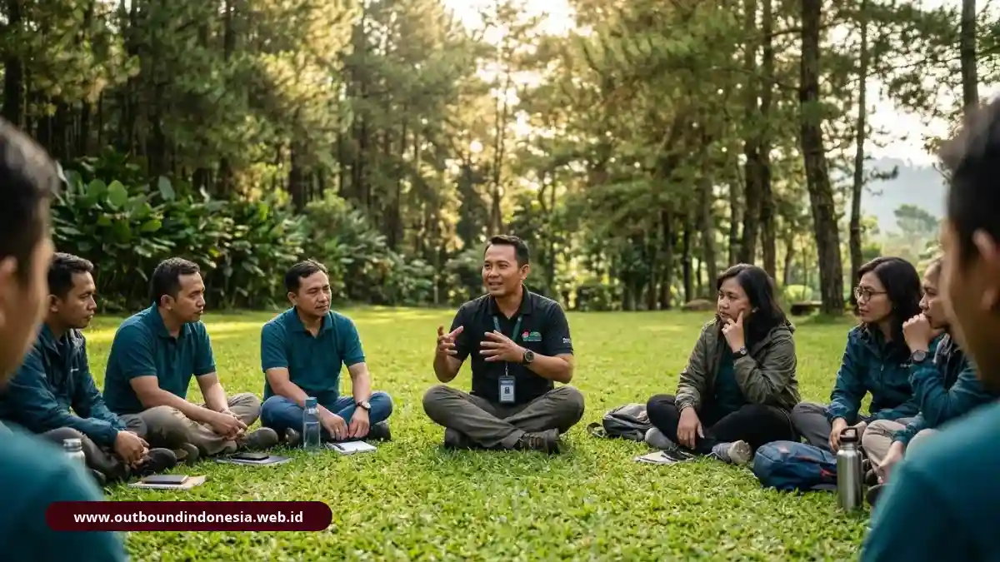

Perbedaan outing, team building, dan outbound training terletak pada tujuannya: outing untuk penyegaran, gathering untuk keakraban, team building untuk kepercayaan dan koordinasi, sedangkan outbound training untuk memperbaiki perilaku kerja yang terukur.
Bagaimana Perbedaan Outing, Gathering, Team Building, dan Outbound Training?
Keempatnya dibedakan oleh tujuan, metode, dan ukuran keberhasilan, dengan outbound training sebagai satu-satunya format yang secara eksplisit menargetkan perubahan perilaku kerja:
| Format | Tujuan Utama | Metode Umum | Indikator Keberhasilan |
|---|---|---|---|
| Outing | Penyegaran dan pemulihan energi karyawan | Rekreasi, wisata, aktivitas santai | Peserta merasa segar dan puas |
| Gathering | Kebersamaan dan keharmonisan keluarga besar/tim | Acara santai, permainan ringan, makan bersama | Keakraban meningkat |
| Team Building | Kepercayaan, interaksi, komunikasi dasar, koordinasi | Permainan kelompok dan tantangan kerja sama | Tim lebih kompak dan komunikatif |
| Outbound Training | Menutup kesenjangan kompetensi dan memperbaiki perilaku | Simulasi terstruktur, refleksi (debriefing), rencana aksi | Perubahan perilaku kerja yang dapat diamati |
| Outdoor Management Development | Kapasitas jangka panjang dan kesiapan manajerial | Program berjenjang, penguatan nilai inti organisasi | Kesiapan pemimpin dan kekuatan jalur kepemimpinan |
Tidak ada format yang lebih benar atau lebih salah. Perusahaan yang ingin merayakan pencapaian target tahunan akan lebih tepat memilih gathering, sedangkan perusahaan dengan masalah koordinasi lintas divisi yang kerap macet memerlukan intervensi outbound training terstruktur.
Mengapa Outbound Training Lebih dari Sekadar Games dan Yel-Yel?
Outbound training dirancang sebagai intervensi pembelajaran, sehingga permainan hanyalah media perantara, sedangkan nilai utamanya ada pada refleksi dan tindak lanjut sesudahnya.
Anggapan bahwa outbound identik dengan hiburan muncul karena banyak acara memang berhenti pada keseruan sesaat. Padahal, pada pelatihan yang dirancang baik, setiap aktivitas dipilih untuk memunculkan situasi yang mirip pekerjaan, misalnya pembagian peran, pengambilan keputusan di bawah tekanan waktu, atau komunikasi lintas fungsi.
Contoh Topik yang Dapat Ditargetkan:
- Respons kepemimpinan saat situasi berubah cepat
- Kelancaran komunikasi antardivisi lintas fungsi
- Metodologi pemecahan masalah (problem solving) dalam tim
- Distribusi tanggung jawab yang jelas dan terukur
Jika proposal vendor hanya berisi daftar permainan tanpa tujuan pembelajaran yang jelas, sebaiknya diperlakukan sebagai team building atau rekreasi, bukan pelatihan.

Fasilitator memimpin sesi debriefing reflektif terstruktur bersama peserta pelatihanBagaimana Experiential Learning dan Adventure Based Learning Process Bekerja?
Experiential learning berarti belajar dari mengalami langsung, lalu merefleksikan pengalaman itu; Adventure Based Learning Process (ABLP) memakai tantangan alam terbuka sebagai simulasi tekanan kerja.
Tantangan di alam, seperti melintasi rintangan atau menyusun strategi kelompok, memaksa peserta menunjukkan perilaku asli mereka. Karena situasinya baru, peserta tidak dapat mengandalkan jabatan atau kebiasaan kantor yang kaku.
Kelemahan komunikasi, dominasi pribadi, atau keengganan berpendapat menjadi terlihat jelas dan dapat dibahas bersama. Kekuatan metode ini sekaligus batasannya: pengalaman saja tidak cukup. Tanpa sesi pembahasan, peserta hanya mengingat kesenangan atau ketegangannya. Karena itu, kualitas fasilitator sama pentingnya dengan kualitas arena.
Apa Peran Debriefing dalam Mengubah Aktivitas Menjadi Perilaku Kerja?
Debriefing, atau funneling the experience, adalah proses bertahap yang membawa peserta dari kejadian di lapangan menuju komitmen perilaku nyata di kantor.
Metode funneling generasi ketiga dari Priest dan Gass memiliki enam tahap sistematis:
- Review: merekonstruksi kejadian yang benar-benar terjadi di lapangan.
- Recall: menguraikan keputusan dan komunikasi yang dilakukan antarpeserta.
- Affect dan Effect: membaca emosi serta dampak tekanan terhadap pola perilaku.
- Summation: menarik pola kerja dan prinsip umum dari rangkaian kejadian.
- Application: menghubungkan pola tersebut dengan situasi tantangan kantor nyata.
- Commitment: mengunci rencana aksi dan komitmen perubahan perilaku yang konkret.
Meta-analisis Tannenbaum dan Cerasoli melaporkan bahwa debriefing terstruktur dapat meningkatkan kinerja individu dan tim sekitar 20 hingga 25 persen. Sebagai hasil penelitian agregat, angka ini bersifat indikatif dan bukan janji untuk setiap perusahaan.
Pada praktiknya, tahap Commitment paling sering terlewat karena waktu acara habis. Minta vendor menyisakan durasi khusus untuk tahap ini, karena di sinilah rencana aksi lahir.
Bagaimana Mengukur Dampak Outbound dengan Model Kirkpatrick?
Model Kirkpatrick mengukur dampak pelatihan melalui empat level berjenjang: reaksi, pembelajaran, perilaku, dan hasil bisnis:
- Level 1, Reaction: menilai relevansi program dan rasa aman peserta, biasanya lewat kuesioner singkat setelah acara.
- Level 2, Learning: menilai insight tentang perilaku dan pemahaman pola komunikasi baru, misalnya lewat catatan refleksi.
- Level 3, Behavior: menilai perubahan perilaku terukur di tempat kerja, seperti pembagian peran tertulis dan check-in proyek rutin.
- Level 4, Results: menilai dampak operasional nyata, seperti penurunan miskomunikasi dan peningkatan efisiensi proyek.
Level 3 dan 4 memerlukan jeda waktu, umumnya beberapa minggu hingga bulan, serta data pembanding sebelum acara. Karena itu, HRD perlu mencatat kondisi awal, misalnya jumlah revisi akibat salah paham atau keterlambatan serah terima, sebelum program berjalan.
Bagaimana Memilih Format yang Tepat Berdasarkan Masalah Tim?
Pilih format dengan memetakan masalah tim ke tujuan yang paling mendekat, lalu memastikan anggaran dan waktu mendukungnya. Berikut panduan ringkasnya:
- Tim lelah setelah proyek besar: pilih outing rekreasi.
- Tim baru atau divisi hasil merger yang belum akrab: pilih gathering atau team building.
- Koordinasi lintas fungsi sering macet: pilih outbound training.
- Persiapan calon pemimpin dan penguatan nilai perusahaan: pilih Outdoor Management Development (OMD).
Perhatikan juga durasi. Perubahan perilaku jarang tercapai dalam satu sesi singkat tanpa tindak lanjut. Program sehari yang dilengkapi tinjauan di kantor sebulan kemudian biasanya jauh lebih bermanfaat daripada acara besar tanpa follow-up terencana.
Kesimpulan Praktis
Pilih format berdasarkan masalah yang ingin diselesaikan, lalu minta vendor menjelaskan metode refleksi dan cara mengukur hasilnya.
- Outing dan gathering cocok untuk pemulihan energi dan keakraban santai.
- Team building memperkuat kepercayaan dan koordinasi dasar kelompok.
- Debriefing enam tahap harus punya alokasi durasi waktu yang jelas dalam rundown.
- Gunakan model Kirkpatrick dan catat data baseline awal agar dampak pelatihan dapat dibuktikan secara nyata.

Tim Outbound Indonesia
Spesialis Learning & Development, konsultan Experiential Learning, dan master trainer outbound korporat.